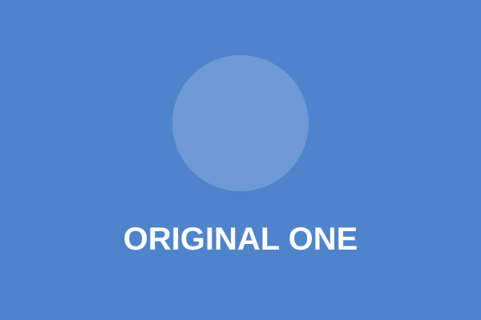
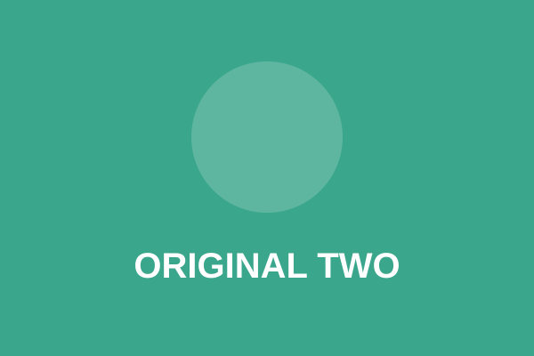
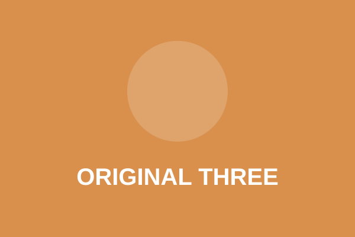

BambooFox Wi-Fi Security
網頁收到的圖片，可以跟來源不同
在瀏覽器重播兩種結果，比對固定的原始圖片與替換圖。
目前顯示原始圖片



在頁面內模擬回應內容。圖片只從裝置讀取，原始檔案維持原樣。
BambooFox Wi-Fi Security
在瀏覽器重播兩種結果，比對固定的原始圖片與替換圖。
目前顯示原始圖片



在頁面內模擬回應內容。圖片只從裝置讀取，原始檔案維持原樣。